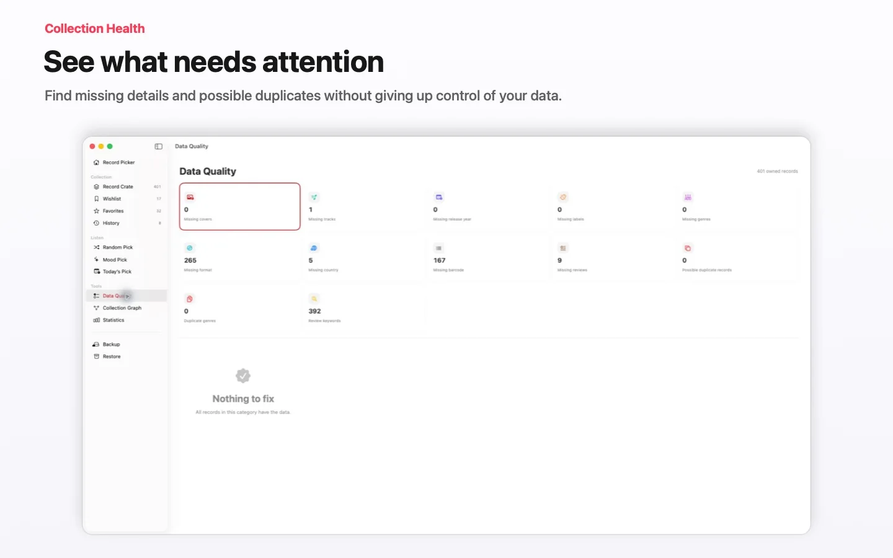

Catalogar, com beleza
Percorra a coleção como um mosaico de capas com zoom ou como uma lista ordenável. Edite qualquer campo diretamente: título, artista, géneros, etiquetas, ano, formato, editora, país, notas e capas personalizadas.

Aplicação nativa para Mac · macOS 2.0
A forma calma e nativa de catalogar os seus vinis e decidir o que tocar esta noite.
O Record Picker leva a sua coleção de discos para o Mac com um catálogo rápido, um motor de recomendações por ambiente e enriquecimento automático com críticas, tudo numa app SwiftUI nativa e limpa.
Gratuito até 100 registos. Uma compra única Pro desbloqueia uma coleção ilimitada no Mac, iPhone e iPad. Sem anúncios, sem tracking, sem subscrição; a sua biblioteca é sincronizada de forma privada através do iCloud.

Percorra a coleção como um mosaico de capas com zoom ou como uma lista ordenável. Edite qualquer campo diretamente: título, artista, géneros, etiquetas, ano, formato, editora, país, notas e capas personalizadas.
A pesquisa de texto completo inclui navegador de resultados em direto, correspondências destacadas e navegação passo a passo. Oito secções respondem a Command-1 até Command-8.

Escreva um momento, como tarde de domingo chuvosa, electro night ou Britpop. O Mood Pick recomenda o álbum certo das suas prateleiras e evita repetições.

